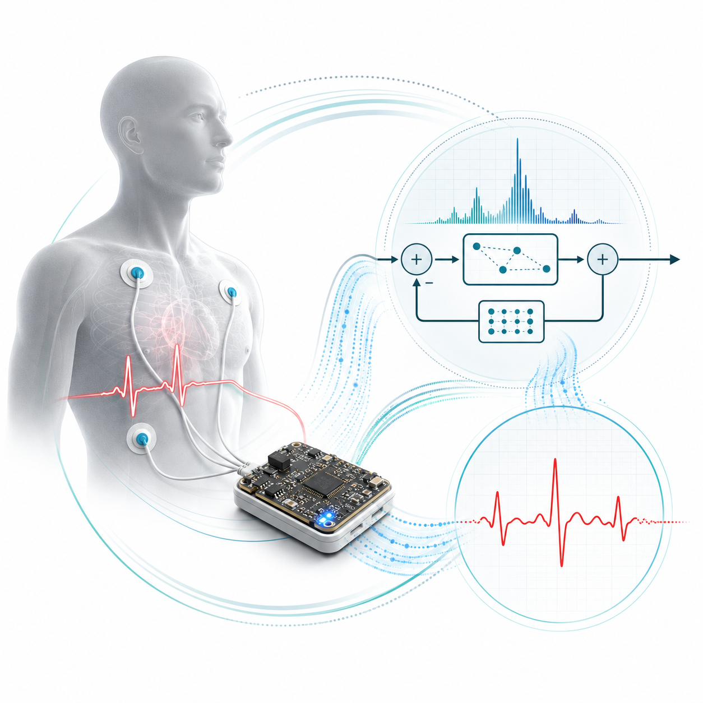
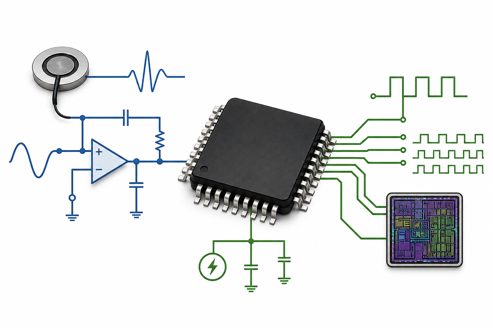

Projects
Here, I showcase some of my projects, including a few that are not part of academic research. For research projects, please visit Publications.
BioDAQ: Development of an Embedded Platform for Biosignal Acquisition
BioDAQ is intended to be a platform for acquiring and processing biosignals using PSoC technology and digital signal-processing algorithms. The goal is to develop accessible, reliable, and portable devices for biomedical applications.
Progress:
A related work has been presented at the Mexican Conference on Signal Analysis and Processing 2026.

Mixed-Signal ASIC Devices
This project focuses on the design of mixed-signal devices using open-source tools, with the goal of developing ASICs for use as sensors, analog signal-conditioning circuits, and custom integrated chips for a wide range of applications.
